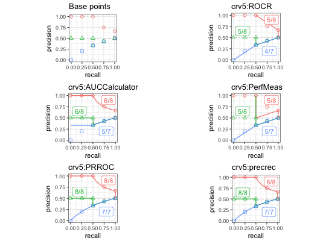

The plot_eval_results function validates Precision-Recall curves
and creates a plot.
# S3 method for evalcurve autoplot(object, base_plot = TRUE, ret_grob = FALSE, ncol = NULL, nrow = NULL, use_category = FALSE, ...)
| object | An S3 object that contains evaluation results of Precision-Recall curves. |
|---|---|
| base_plot | A Boolean value to specify whether the base points are plotted. |
| ret_grob | A Boolean value to specify whether the function returns a grob object. |
| ncol | An integer used for the column size of multiple panes. |
| nrow | An integer used for the row size of multiple panes. |
| use_category | A Boolean value to specify whether the categorical summary instead of the total summary. |
| ... | Not used by this function. |
A data frame with validation results.
library(ggplot2)#> #>## Plot evaluation results on test datasets r1, r2, and r3 testset <- create_testset("curve", c("c1", "c2", "c3")) toolset <- create_toolset(set_names = "crv5") eres1 <- run_evalcurve(testset, toolset) autoplot(eres1)